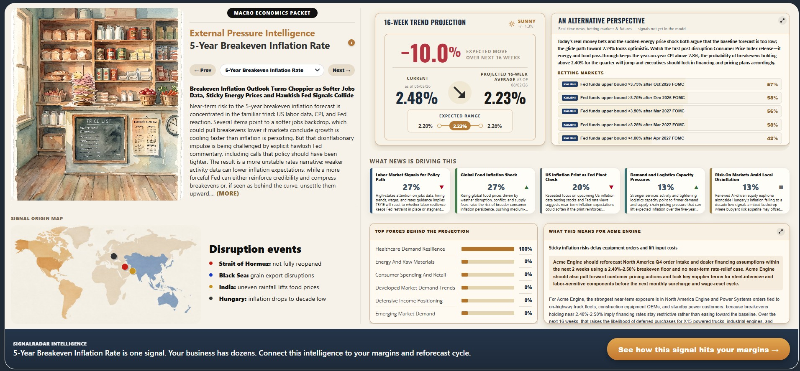

Free Weekly Intelligence


Industry intelligence reports
Each week, SignalRadar publishes free external intelligence across four report packets — Metals, Energy, Agriculture, and Macroeconomics. See what the platform can do for your business, applied to the specific metrics that actually move your plan.
Metals Packet
Copper, aluminum, steel, gold, and silver — seven tracked variables spanning direct cost inputs and
broader economic condition signals.
Energy Packet
Crude oil, natural gas, gasoline, and diesel — seven tracked variables covering both forward pricing
and real retail costs that flow into freight and operations.
Agriculture Packet
Corn, wheat, soybeans, coffee, and sugar — five tracked variables driving ingredient costs and
consumer food-price pressure.

Macroeconomics Packet
Inflation expectations, global shipping demand, dollar strength, and the labor market — four tracked
variables that sit upstream of every other report.